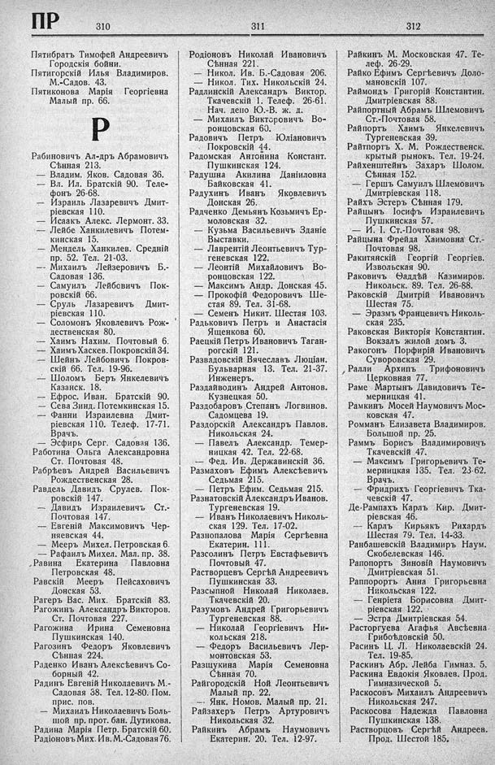

Лист источника 454
Скан

Распознанный текст
ПР 310
Пятибратъ Тимофей Андреевичъ
Городскія бойни.
Пятигорскій Илья Владимиров.
М.-Садов. 43.
Пятиконова Марія Георгіевна
Малый пр. 66.
Р
Рабиновичъ Ал-дръ Абрамовичъ
Сѣнная 213.
— Владим. Яков. Садовая 36.
— Вл. Ил. Братскій 90. Теле-
фонъ 26-68.
— Израиль Лазаревичъ Дмит-
ріевская 110.
— Исаакъ Алекс. Лермонт. 33.
— Лейбе Ханкилевичъ Потем-
кинская 15.
— Мендель Ханкилев. Средній
пр. 52. Тел. 21-03.
— Михаилъ Лейзеровичъ Б.-
Садовая 136.
— Самуилъ Лейбовичъ Пок-
ровскій 66.
— Сруль Лазаревичъ Дмит-
ріевская 110.
— Соломонъ Яковлевичъ Рож-
дественская 80.
— Хаимъ Нахим. Почтовый б.
— Хаимъ Хаскев. Покровскій 34.
— Шейнъ Лейбовичъ Покров-
скій 66. Тел. 19-96.
— Шоломъ Беръ Янкелевичъ
Казанск. 18.
— Ефрос. Иван. Братскій 90.
— Сева Зинд. Потемкинская 15.
— Фанни Израилевна Дмит-
ріевская 110. Телеф. 17-71.
Врачъ.
— Эсфирь Серг. Садовая 136.
Работина Ольга Александровна
Ст. Почтовая 48.
Рабрѣевъ Андрей Васильевичъ
Рождественская 28.
Равдель Давидъ Срулев. Пок-
ровскій 147.
— Давидъ Израилевичъ Ст.-
Почтовая 147.
— Евгеній Максимовичъ Чер-
няевская 44.
— Мееръ Михел. Петровская 6.
— Рафаилъ Михел. Мал. пр. 38.
Равина Екатерина Павловна
Петровская 48.
Равскій Мееръ Пейсаховичъ
Донская 53.
Рагеръ Вас. Мих. Братскій 83.
Рагожинъ Александръ Викторов.
Ст. Почтовая 227.
Рагожина Ирина Семеновна
Пушкинская 140.
Рагозинъ Федоръ Яковлевичъ
Сѣнная 224.
Раденко Иванъ Алексѣевичъ Со-
борный 42.
Радинъ Евгеній Николаевичъ М.-
Садовая 38. Тел. 12-80. Пом.
прис. пов.
— Михаилъ Николаевичъ Боль-
шой пр. прот. бан. Дутикова.
Радина Марія Петр. Братскій 60.
Радіоновъ Мих. Ив. М.-Садовая 76.
311
Родіоновъ Николай Ивановичъ
Сѣнная 221.
— Никол. Ив. Б.-Садовая 206.
— Никол. Тих. Никольскій 24.
Радлинскій Александръ Виктор.
Ткачевскій 1. Телеф. 26-61.
Нач. депо Ю.-В. ж. д.
— Михаилъ Викторовичъ Во-
ронцовская 60.
Радовичъ Петръ Юліановичъ
Покровскій 44.
Радомская Антонина Констант.
Пушкинская 124.
Радушна Акилина Даніиловна
Байковская 41.
Радухинъ Иванъ Яковлевичъ
Донская 26.
Радченко Демьянъ Козьмичъ Ер-
моловская 32.
— Кузьма Васильевичъ Зданіе
Выставки.
— Лаврентій Леонтьевичъ Тур-
геневская 122.
— Леонтій Михайловичъ Во-
ронцовская 122.
— Максимъ Андр. Донская 45.
— Прокофій Федоровичъ Ше-
стая 89. Тел. 31-68.
— Семенъ Никит. Шестая 103.
Радьковичъ Петръ и Анастасія
Ященкова 60.
Раецкій Петръ Ивановичъ Таган-
рогскій 121.
Развадовскій Вячеславъ Люціан.
Бульварная 13. Тел. 21-37.
Инженеръ.
Раздайводинъ Андрей Антонов.
Кузнецкая 50.
Раздобаровъ Степанъ Логвинов.
Садомцева 19.
Раздорскій Александръ Павлов.
Никольская 24.
— Павелъ Александр. Темер-
ницкая 42. Тел. 22-68.
— Фед. Ив. Державинскій 36.
Размаховъ Ефимъ Алексѣевичъ
Седьмая 215.
— Петръ Ефим. Седьмая 215.
Разнатовскій Александръ Иванов.
Тургеневская 19.
— Иванъ Николаевичъ Николь-
ская 129. Тел. 17-02.
Разнопалова Марія Сергѣевна
Екатерин. 111.
Разсолинъ Петръ Евстафьевичъ
Почтовый 47.
Растворцевъ Сергѣй Андреевичъ
Пушкинская 33.
Разсыпной Николай Николаев.
Ткачевскій 20.
Разумовъ Андрей Григорьевичъ
Тургеневская 88.
— Николай Георгіевичъ Ни-
кольская 218.
— Федоръ Васильевичъ Лер-
монтовская 53.
Разщукина Марія Семеновна
Сѣнная 70.
Райгородскій Ной Леонтьевичъ
Малый пр. 22.
— Янк. Номов. Малый пр. 21.
Райзахеръ Петръ Артуровичъ
Никольская 32.
Райкинъ Абрамъ Наумовичъ
Екатерин. 20. Тел. 12-97.
312
Райкинъ М. Московская 47. Те-
леф. 26-29.
Райко Ефимъ Сергѣевичъ Доло-
мановскій 107.
Раймондъ Григорій Константин.
Дмитріевская 88.
Райпортный Абрамъ Шлемовичъ
Ст.-Почтовая 58.
Райпортъ Хаимъ Янкелевичъ
Тургеневская 39.
Райтпортъ Х. М. Рождественск.
крытый рынокъ. Тел. 19-24.
Райхенштейнъ Захаръ Шолом.
Сѣнная 152.
— Гершъ Самуилъ Шлемовичъ
Дмитріевская 118.
Райхъ Эстеръ Сѣнная 179.
Райцынъ Іосифъ Израилевичъ
Пушкинская 57.
— И. І. Ст.-Почтовая 98.
Райцына Фрейда Хаимовна Ст.-
Почтовая 98.
Ракитянскій Георгій Георгіев.
Извольская 90.
Раковичъ Ѳаддѣй Казимиров.
Никольск. 89. Тел. 26-88.
Раковскій Дмитрій Ивановичъ
Шестая 75.
— Эразмъ Францевичъ Николь-
ская 235.
Раковская Викторія Константин.
Вокзалъ жилой домъ 3.
Ракогонъ Порфирій Ивановичъ
Суворовская 29.
Ралли Архипъ Трифоновичъ
Церковная 77.
Раме Мартынъ Давидовичъ Те-
мерницкая 41.
Рамкинъ Мосей Наумовичъ Мос-
ковская 47.
Ромманъ Елизавета Владимиров.
Большой пр. 25.
Раммъ Борисъ Владимировичъ
Ткачевскій 47.
— Максимъ Григорьевичъ Те-
мерницкая 135. Тел. 23-62.
Врачъ.
— Фридрихъ Георгіевичъ Тка-
чевскій 47.
Де-Рампахъ Карлъ Кир. Дмит-
ріевская 46.
— Карлъ Кирьякъ Рихардъ
Шестая 79. Тел. 14-33.
Ранбашевскій Владимиръ Наум.
Скобелевская 146.
Рапопортъ Зиновій Наумовичъ
Дмитріевская 51.
Раппорортъ Анна Григорьевна
Никольская 122.
— Генріета Борисовна Дмит-
ріевская 122.
— Эстра Дмитріевская 54.
Расторгуева Агафья Авсѣевна
Грибоѣдовскій 50.
Расинъ Ц. Л. Николаевскій 24.
Тел. 19-85.
Раскинъ Абр. Лейба Гимназ. 5.
Раскина Евдокія Яковлев. Прод.
Гимназической 5.
Раскосовъ Михаилъ Андреевичъ
Никольская 247.
Раскосова Надежда Павловна
Пушкинская 138.
Растворцовъ Сергѣй Андреев.
Прод. Шестой 185.